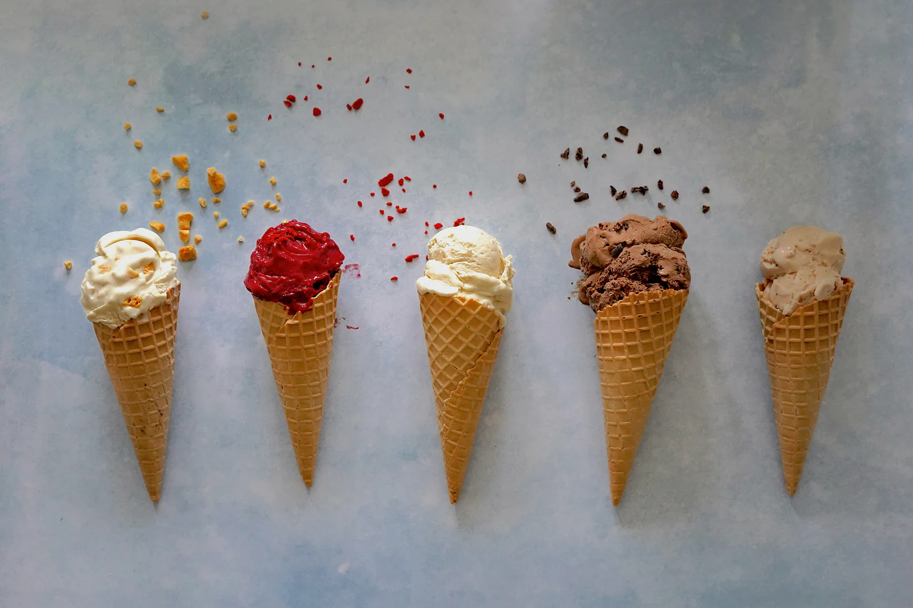

Sweet Dreams
Classic recipes
Top 5 popular and classic desserts recipes
- 1.Apfelstrudel
Apfelstrudel, a beloved dessert originating from Austria,
has gained international acclaim for its delicious blend of flavors and delicate pastry.
This traditional pastry features a flaky, buttery dough stretched thin and filled
with a sweet and fragrant mixture of thinly sliced apples, sugar, cinnamon, raisins,
and sometimes nuts.
Full recipe of Apfelstrudel
- 2.Brownie
Brownies are a quintessential treat enjoyed by people of all ages around the world.
These indulgent squares of goodness are characterized by their dense, fudgy texture and rich chocolate flavor.
Brownies can be customized with various add-ins such as nuts, chocolate chips, or swirls of caramel for an extra
layer of decadence.
Full recipe of Brownie

3.Tiramisu
An Italian delight featuring layers of espresso-soaked ladyfingers,
creamy mascarpone cheese, and cocoa powder, creating a heavenly combination of flavors and textures.
This elegant treat features layers of delicate ladyfinger biscuits soaked in espresso and layered with a
creamy mixture of mascarpone cheese, eggs, sugar, and sometimes a splash of liqueur like Marsala wine or rum.
Full recipe of Tiramisu
 4.Mochi
4.Mochi
A Japanese delicacy made from glutinous rice flour, typically filled
with sweetened red bean paste or ice cream, and often served as bite-sized treats.
This versatile ingredient is used to make a variety of sweet and savory treats that hold a
special place in Japanese culture and cuisine.
Full recipe of Mochi
 5.Gelato
5.Gelato
Italy's answer to ice cream, gelato is known for its intense flavors,
smooth texture, and lower fat content compared to traditional ice cream.
One of the defining characteristics of gelato is its lower fat content compared to ice cream, which allows
its flavors to shine through with greater intensity.
Full recipe of Gelato
